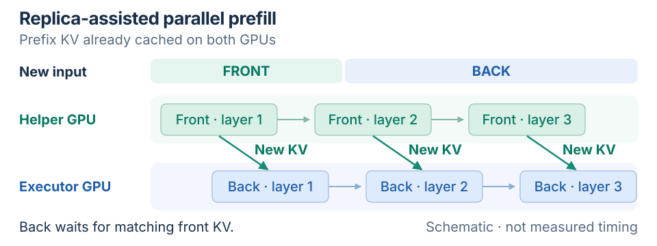
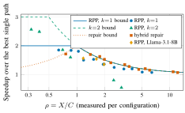

MobiKV: Replica-Assisted KV Cache Scheduling for Multi-Turn LLM Serving at the Mobile Edge
MobiKV is a replica-assisted KV cache scheduling framework for multi-turn LLM serving at the mobile edge.
It combines cache-aware placement, ratio-guided KV repair, and replica-assisted parallel prefill so a secondary KV copy can become a compute helper when the measured operating point supports it.
The problem
The user moves.
The conversation continues.
The next turn may reach a server that does not have the conversation’s KV cache.
Moving or rebuilding that cache can take seconds. Forwarding the request to a server that already holds it adds only milliseconds, but that server may be busy. And even with the cache in place, a long new input still needs prefill.
Where a request arrives need not be where it runs.
The design
One replica, two useful roles.
MobiKV keeps one replica near the user. It provides another place to run the next turn and a helper for long prefills.
Choose the executor
Compare all servers using cache-repair time, GPU queues and the stalls that new work would cause to active decoding.
Repair missing KV
Transfer the missing cache, recompute it, or overlap both. Account for the work already waiting on the GPU and links.
Split a long prefill
A helper computes the front of the input and streams its KV layer by layer while the executor computes the back.
Refresh between turns
Send only the KV added by the latest turn, using idle link capacity. Replica refresh uses no GPU.

Experimental results
Less waiting for the next answer.
We evaluate the controller in trace-driven simulations, then test its prefill mechanism and replay its jobs on real GPUs.
Lower P90 TTFT across six standard-attention models
lower P90 time to first token
than the best baseline
20 mobility seeds
Each model is compared with its best baseline for P90 TTFT. Reductions use the mean paired ratio across seeds.
The study includes eight models. For the two hybrid-attention models, cache transfers are already cheap at 10 Gb/s; MobiKV does not improve every percentile.
P90 TTFT falls from 4.83 s to 2.24 s
Qwen3-8B on three A800 GPUs in one node, with a 25% GPU share per process and paced 0.93 Gb/s links. Results pool mobility seeds 41–43.
lower P90 TTFT
than Mooncake, the best baseline
median time per output token
versus 33.6 ms for the best baseline
P90 time to first token
Seconds · lower is betterMobiKV reduces P90 TTFT by 54% relative to the best baseline.
The chart shows MobiKV and four load-aware baselines. Policies send different requests to the three servers. Intervals resample requests within each seed; comparisons do not pair requests across policies.
All seven policies and confidence intervals
| Policy | Requests | Estimate | 95% interval |
|---|
The table follows the metric and percentile selected above. Download all pooled results (CSV).
One helper makes long prefills 1.65–1.89× faster
Across 21 configurations with at least 4k new tokens and a transfer-to-compute ratio known to be below 1, RPP shortens prefill on five models. In all 510 tested split configurations, its logits are bitwise identical to chunked prefill at the same split boundary.
View measurements against the one-helper bound

What determines the gain?
Cache movement and prefill have different costs.
Repairing an existing prefix
γ = transfer time / recompute time
This ratio helps decide how much missing KV to transfer and how much to rebuild. The experiment below varies the link rate. We report the ratio for an 8k-token reference context.
Prefilling the new input
ρ = new-KV transfer time / compute time
In the idealized model, one helper reaches the prefill-time lower bound when ρ ≥ 1. Faster links can make more helpers useful.

Assumptions behind the prefill bound
The bound assumes equal GPU and link rates, costs proportional to token counts, helpers that already hold the prefix, idle resources, and negligible layer-pipeline startup. The controller uses a separate finish-time model to account for startup and queues. The current implementation evaluates at most one helper; extending it to multiple helpers when transfers are much faster than computation is future work.
Code and data
Explore the evidence.
The released aggregates contain the cross-model results, ratio sweep, two-GPU measurements and three-GPU replay used on this page.
Source repository
Simulator, GPU measurement tools and project documentation.
MeasurementsReleased data
Final evaluation aggregates, units, policy names and file descriptions.
Getting startedReproduction notes
Environment setup, input traces and experiment entry points.
Release status. The final evaluation aggregates are public. The repository’s simulator and reproduction scripts still reflect the earlier design; the code that produced the final campaign has not yet been merged.
Reference
Cite MobiKV
The paper is not public yet. This citation points to the project repository.
@misc{wang2026mobikv,
title = {MobiKV: Replica-Assisted KV Cache Scheduling for Multi-Turn LLM Serving at the Mobile Edge},
author = {Wang, Wenbin and Wang, Runan and Liu, Jiangchuan and Hu, Xiping},
year = {2026},
note = {Preprint forthcoming},
url = {https://github.com/WenbinWang12/MobiKV}
}